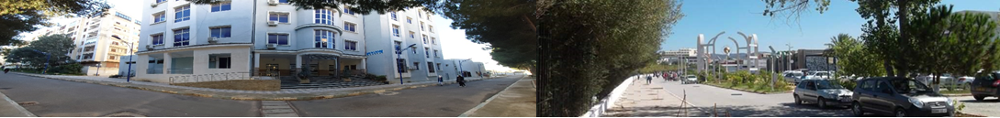

Accueil
Les conférenciers/Invited speakers
Thématiques
Dates-limites
Inscriptions
Le Comité Scientifique
Le Comité d'organisation
Consignes
Programme
Contact

Faculté des Sciences
Département de physique
2e Journées Scientifiques et Pédagogiques de la Physique
2e JSPP
Séminaire virtuel le 3 et 4 juillet 2021
Dépliant des journnées virtuelles (ici)
Le département de Physique de la faculté des sciences de l’UMBB organise les journées scientifiques et pédagogiques de la physique, les 3 et 4 juillet 2021.
Objectifs :
Cette édition des JSPP-UMBB en vidéoconférence permettra aux doctorants ainsi qu’aux étudiants en Master 2 de l’année 2020-2021 de notre Département de Physique de présenter leurs travaux de recherche, d’échanger avec leurs collègues et leurs enseignants et de profiter des contributions de grands conférenciers.